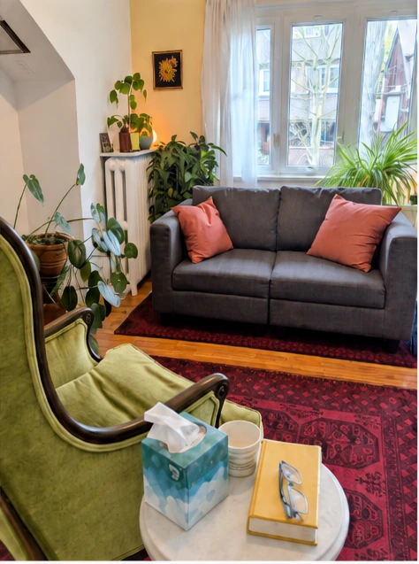

Therapy

Why Seek Therapy?
People come to therapy for many different reasons. You may be struggling with difficult emotions, relationship challenges, addiction, self-esteem, or the demands of a major life transition. You may feel stuck, disconnected, or simply sense that life could feel more meaningful, creative or fulfilling.
Whatever brings you in, I don’t see symptoms as problems that need to be eliminated as quickly as possible. Anxiety, depression, anger or withdrawal can sometimes be signals that something important is asking for attention. This may include unresolved pain, unmet needs, or ways of protecting yourself that once made sense but may no longer be helping.
Psychotherapy offers a space to understand these patterns more deeply, reconnect with parts of yourself that may have become difficult to access, and discover new possibilities for how you live, relate and move forward.
How Therapy Works
My approach is best described as embodied, relational and mindfulness-based Gestalt therapy.
The first priority is building trust. From there, we can go deeper at a pace that feels manageable for you. There is no fixed formula for a session, because different people need different things. Sometimes we talk and reflect. At other times, we may slow down and pay closer attention to what is happening in the present: your emotions, breathing, body sensations, posture, impulses, or the way you respond as we speak.
My work is also informed by Jungian psychology and more than 30 years of contemplative practice. I draw from these influences in a practical, grounded way, using what is most helpful for each person. My approach is integrative, meaning I bring a range of tools and perspectives into the work rather than relying on a single method.
I’m interested not only in where you have been, but in where you are now, what may be keeping you stuck, and what may be trying to emerge next.
Ultimately, therapy is about more than coping better. It can help you develop a deeper relationship with yourself, loosen patterns that keep you stuck, and move toward greater freedom, connection, authenticity and purpose.